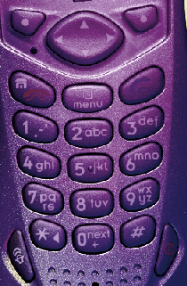

This demonstration showcases the use of the Goertzel function as a part of a DFT-based DTMF detection algorithm.
Dual-tone Multi-Frequency (DTMF) signaling is the basis for voice communications control and is widely used worldwide in modern telephony to dial numbers and configure switchboards. It is also used in systems such as in voice mail, electronic mail and telephone banking.

A DTMF signal consists of the sum of two sinusoids - or tones - with frequencies taken from two mutually exclusive groups. These frequencies were chosen to prevent any harmonics from being incorrectly detected by the receiver as some other DTMF frequency. Each pair of tones contains one frequency of the low group (697 Hz, 770 Hz, 852 Hz, 941 Hz) and one frequency of the high group (1209 Hz, 1336 Hz, 1477Hz) and represents a unique symbol. The frequencies allocated to the push-buttons of the telephone pad are shown below:
1209 Hz 1336 Hz 1477 Hz
_ _ _ _ _ _ _ _ _ _ _ _ _ _ _
| | |
| | ABC | DEF |
697 Hz | 1 | 2 | 3 |
|_ _ _ _ __ _ _ _ __ _ _ _ _
| | |
| GHI | JKL | MNO |
770 Hz | 4 | 5 | 6 |
|_ _ _ _ __ _ _ _ __ _ _ _ _
| | |
| PRS | TUV | WXY |
852 Hz | 7 | 8 | 9 |
|_ _ _ _ __ _ _ _ __ _ _ _ _
| | |
| | | |
941 Hz | * | 0 | # |
|_ _ _ _ __ _ _ _ __ _ _ _ _First, let's generate the twelve frequency pairs
symbol = {'1','2','3','4','5','6','7','8','9','*','0','#'};
lfg = [697 770 852 941]; % Low frequency group
hfg = [1209 1336 1477]; % High frequency group
f = [];
for c=1:4,
for r=1:3,
f = [ f [lfg(c);hfg(r)] ];
end
end
f'
ans =
697 1209
697 1336
697 1477
770 1209
770 1336
770 1477
852 1209
852 1336
852 1477
941 1209
941 1336
941 1477
Next, let's generate and visualize the DTMF tones
Fs = 8000; % Sampling frequency 8 kHz N = 800; % Tones of 100 ms t = (0:N-1)/Fs; % 800 samples at Fs pit = 2*pi*t; tones = zeros(N,size(f,2)); for toneChoice=1:12, % Generate tone tones(:,toneChoice) = sum(sin(f(:,toneChoice)*pit))'; % Plot tone subplot(4,3,toneChoice),plot(t*1e3,tones(:,toneChoice)); title(['Symbol "', symbol{toneChoice},'": [',num2str(f(1,toneChoice)),',',num2str(f(2,toneChoice)),']']) set(gca, 'Xlim', [0 25]); ylabel('Amplitude'); if toneChoice>9, xlabel('Time (ms)'); end end set(gcf, 'Color', [1 1 1], 'Position', [1 1 1280 1024]) annotation(gcf,'textbox', 'Position',[0.38 0.96 0.45 0.026],... 'EdgeColor',[1 1 1],... 'String', '\bf Time response of each tone of the telephone pad', ... 'FitHeightToText','on');
Let's play the tones of phone number 508 647 7000 for example. Notice that the "0" symbol corresponds to the 11th tone.
for i=[5 11 8 6 4 7 7 11 11 11], p = audioplayer(tones(:,i),Fs); play(p) pause(0.5) end
The minimum duration of a DTMF signal defined by the ITU standard is 40 ms. Therefore, there are at most 0.04 x 8000 = 320 samples available for estimation and detection. The DTMF decoder needs to estimate the frequencies contained in these short signals.
One common approach to this estimation problem is to compute the Discrete-Time Fourier Transform (DFT) samples close to the seven fundamental tones. For a DFT-based solution, it has be shown that using 205 samples in the frequency domain minimizes the error between the original frequencies and the points at which the DFT is estimated.
Nt = 205;
original_f = [lfg(:);hfg(:)] % Original frequencies
original_f =
697
770
852
941
1209
1336
1477
k = round(original_f/Fs*Nt); % Indices of the DFT estim_f = round(k*Fs/Nt) % Frequencies at which the DFT is estimated
estim_f =
702
780
859
937
1210
1327
1483
To minimize the error between the original frequencies and the points at which the DFT is estimated, we truncate the tones, keeping only 205 samples or 25.6 ms for further processing.
tones = tones(1:205,:);
At this point we could use the Fast Fourier Transform (FFT) algorithm to calculate the DFT. However, the popularity of the Goertzel algorithm in this context lies in the small number of points at which the DFT is estimated. In this case, the Goertzel algorithm is more efficient than the FFT algorithm.
Plot Goertzel's DFT magnitude estimate of each tone on a grid corresponding to the telephone pad.
figure, for toneChoice=1:12, % Select tone tone=tones(:,toneChoice); % Estimate DFT using Goertzel ydft(:,toneChoice) = goertzel(tone,k); % Plot magnitude of the DFT subplot(4,3,toneChoice),stem(estim_f,abs(ydft(:,toneChoice))); title(['Symbol "', symbol{toneChoice},'": [',num2str(f(1,toneChoice)),',',num2str(f(2,toneChoice)),']']) set(gca, 'XTick', estim_f, 'XTickLabel', estim_f, 'Xlim', [650 1550]); ylabel('DFT Magnitude'); if toneChoice>9, xlabel('Frequency (Hz)'); end end set(gcf, 'Color', [1 1 1], 'Position', [1 1 1280 1024]) annotation(gcf,'textbox', 'Position',[0.28 0.96 0.45 0.026],... 'EdgeColor',[1 1 1],... 'String', '\bf Estimation of the frequencies contained in each tone of the telephone pad using Goertzel', ... 'FitHeightToText','on');
The digital tone detection can be achieved by measuring the energy present at the seven frequencies estimated above. Notice that by simply taking the component of maximum energy in the lower and upper frequency groups, one can detect most of the symbols. Problems remain, however, since the lowest frequency component of the upper group (1209 Hz) is under-estimated for symbols "1", "4" and "7". To ensure proper detection, an error control algorithm needs to be developed.